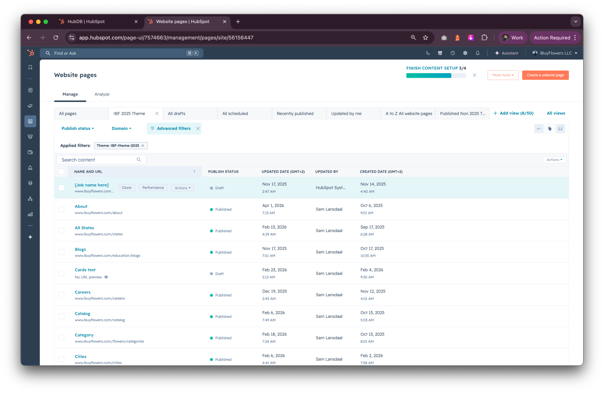
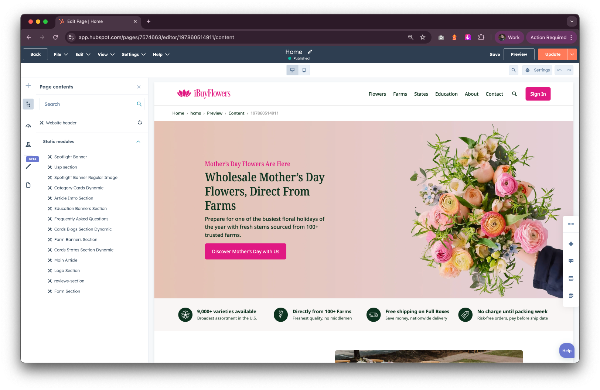
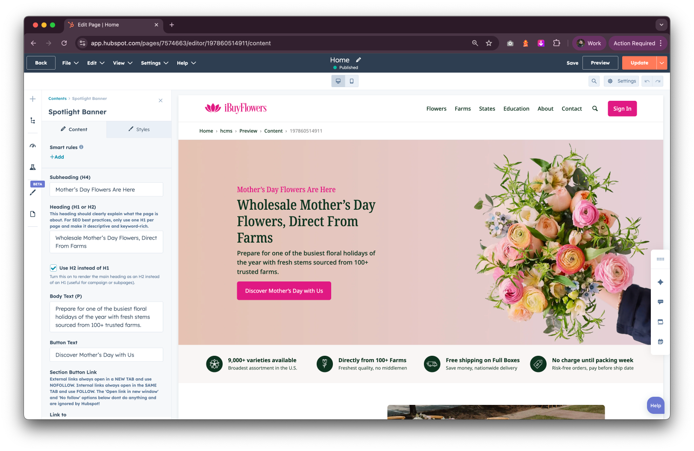
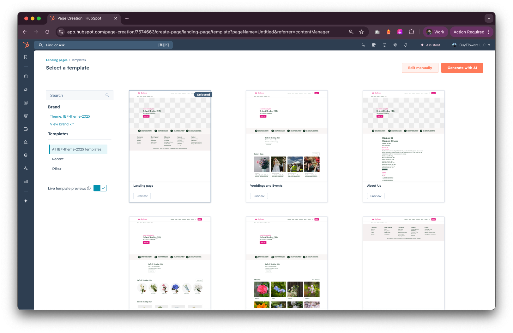
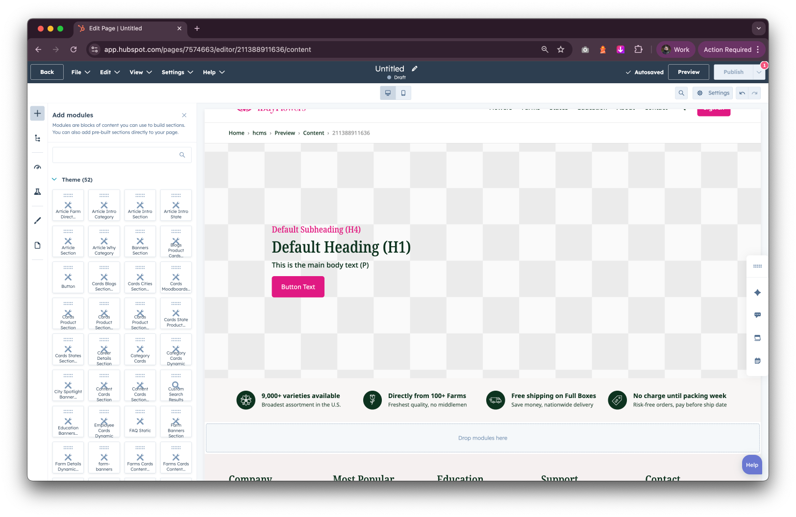
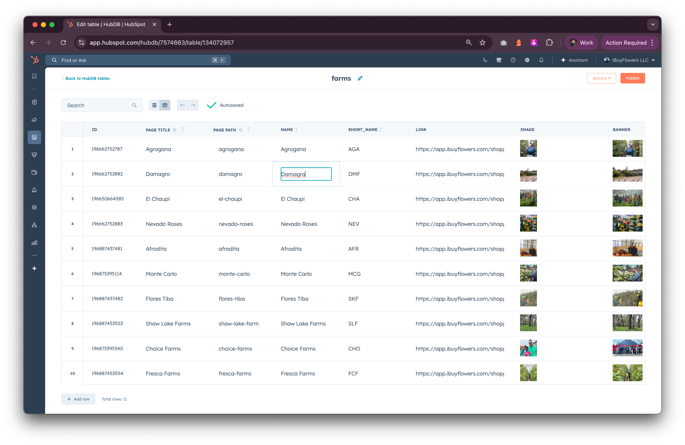
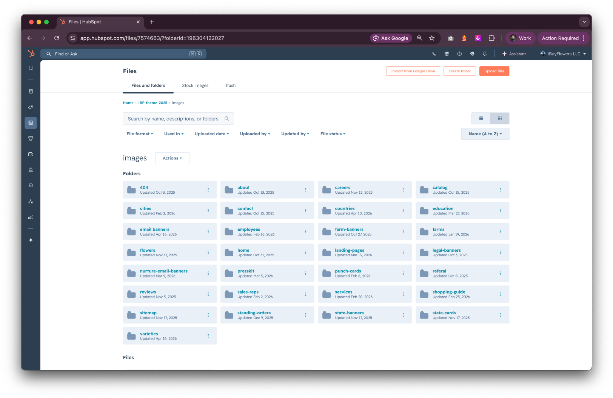

Understand how IBuyFlowers' HubSpot CMS is set up before you start making changes.
About this guide
This guide is your reference for working in the IBuyFlowers HubSpot CMS. Whether you need to update a page, add an entry to a data table, or use a custom component — this document walks you through it step by step.
👤
Who this is for
Content editors and team members who need to make updates in HubSpot without being developers. No coding knowledge is required for most tasks.
💡
Before you start
Make sure you have access to the IBuyFlowers HubSpot portal. If you don't have login credentials yet, ask Management to set up your account.
How to use this guide
Use the left sidebar to jump to any section at any time.
Each section is self-contained — you don't need to read everything in order.
Step-by-step tasks are numbered and walk you through each action.
Look out for warning boxes — they highlight things that could break the site if done incorrectly.
To save this guide as a PDF, open your browser's print dialog and select Save as PDF.
Quick links
Jump straight to what you need. Sections open automatically when you click a link.
HubSpot CMS is the platform where the IBuyFlowers website lives. Think of it as a "control panel" for the website — it lets the team create pages, update content, manage data, and publish changes, all from a browser without touching any code.
The website visitors see at ibuyflowers.com is built and maintained entirely through HubSpot. Sam has set up all the behind-the-scenes structure — templates, modules, and data tables — so that the website looks and works consistently. Your job as a content editor is to fill in and update content using those pre-built tools.
What you can do in HubSpot
Manage pages
Create, edit, duplicate, and publish website pages and landing pages.
Update data tables
Add or edit rows in HubDB tables that power product listings, farms, states, and more.
Use components
Place and configure pre-built modules — banners, card sections, FAQs, forms, and more.
Manage files
Upload and manage images and files used across the site.
How the site is structured
The IBuyFlowers website is built in layers. Understanding this structure helps you know where to go when you need to make a change.
🌐
Pages
What visitors see — each page has its own URL (e.g. /flowers/roses)
You manage this
↓
📐
Templates
Define the layout and structure of a page (e.g. "Home", "Product Detail", "Landing Page")
Built by Sam
↓
🧩
Modules
Content blocks within a page — banners, card sections, FAQs, forms, and more
You configure this
↓
🗃️
HubDB
A database powering dynamic content — product listings, farm details, state pages, and more
You manage this
A real-world example
When someone visits the Roses product page:
HubSpot loads the Flower Detail template for that page.
The template places a set of modules on the page — a spotlight banner, product cards, an article section, and more.
Some of those modules pull their content dynamically from HubDB — like the product name, image, and description.
The visitor sees the fully assembled page.
This means: to update a product's details, you often just need to edit a row in a HubDB table — the page updates automatically, no page editing needed.
💡
Rule of thumb
If a page displays a list of things (products, farms, states, cities) — the data almost certainly comes from HubDB. Go there to add or update entries. If a page has unique, one-off content — go to the page editor to update it directly.
Key terms
Here are the most important terms you'll come across when working in HubSpot.
Term
What it means
Portal
Your HubSpot account/workspace. IBuyFlowers has one portal where everything lives.
Page
A single page on the website with its own URL — like /about-us or /flowers.
Template
The layout structure a page is built on. Determines which modules appear and in what order. Built by Sam.
Module
A pre-built content block on a page — e.g. a spotlight banner, a cards section, or an FAQ list. You fill in the content.
HubDB
HubSpot's built-in database — like a spreadsheet that automatically powers parts of the website.
Row
A single entry in a HubDB table — one product, one farm, one state, etc.
Draft
A page that hasn't been published yet. Visitors cannot see it.
Published
A live page that visitors can see on the website.
Slug
The URL path of a page — the part after the domain, e.g. /about-us.
Rich text
A text editor that lets you bold, italicize, add links, and format text — similar to Google Docs.
Clone / Duplicate
Making a copy of a page to use as a starting point for a new one.
File Manager
HubSpot's media library where images and other files are stored and managed.
Accessing HubSpot
How to log in
1
Go to HubSpot
Open your browser and navigate to app.hubspot.com
2
Sign in with your team credentials
Use your work email address and password. If you don't have an account, contact Management to get one set up.
3
Confirm you're in the right portal
After logging in, check the top-left corner of the screen. It should show IBuyFlowers. If it shows a different name, click on it and switch to the IBuyFlowers portal.
Key areas to know
Once logged in, here are the four main areas you'll use regularly:
Content → Website Pages
Find and edit all regular website pages.
Content → Landing Pages
Find and edit landing pages used for campaigns and sign-ups.
Content → HubDB
View and edit all data tables — products, farms, states, and more.
Marketing → Files
Upload and manage images and files used across the site.
⚠️
Always check you're in the right portal
Double-check the portal name in the top-left corner of HubSpot before making any changes. Editing in the wrong portal could affect a different account entirely.
🚫
Don't touch code unless instructed
HubSpot allows you to edit raw HTML, CSS, and JS in some areas — please don't do this unless Sam has specifically guided you to. Accidental changes to code can break pages site-wide.
02
Website Pages
How to find, edit, duplicate, and publish the permanent pages of the IBuyFlowers website.
What are website pages?
Website pages are the permanent, long-running pages of the IBuyFlowers website — the home page, about page, farms, state pages, product pages, and more. They live at a fixed URL and are meant to stay on the site long-term.
They are different from landing pages (covered in Section 03), which are typically created for specific campaigns or promotions and have a shorter lifespan.
Where to find them in HubSpot
Content → Website Pages
This is where all website pages live. You can search, filter, edit, duplicate, and publish from here.
Key pages on the IBuyFlowers website
Page
What it is
Home
The main landing page at ibuyflowers.com
Flowers / Catalog
The product catalogue and individual product detail pages
Categories
Pages per flower category (Roses, Hydrangeas, etc.)
Farms
Overview and detail pages for each partner farm
States / Cities
Location-based SEO pages — one per US state and city
Countries
Sourcing pages for Ecuador, Colombia, and the United States
About / Education / Blogs
Informational and content pages
Contact / Services
Contact and service information pages
Finding & opening a page
1
Go to Website Pages
In HubSpot, click Content in the top navigation, then select Website Pages.
2
Search for the page
Use the search bar at the top to find a page by its name or URL. For example, type "alabama" to find the Alabama state page.
3
Filter by status if needed
Use the Status filter to show only Published, Draft, or Scheduled pages. This is useful if you're looking for a page you were working on but haven't published yet.
4
Hover over the page and click Edit
Hover over the page row to reveal action buttons. Click Edit to open it in the page editor.

The Website Pages list in HubSpot — found under Content → Website Pages. Name, URL, and Status columns are visible at a glance. Hover any row to reveal the Edit, Clone, and Actions buttons on the right.
Understanding the page list
Column
What it shows
Name
The internal page name used in HubSpot (not always the same as the page title visitors see)
URL
The live web address of the page
Status
Published (live), Draft (not yet live), or Scheduled (set to go live at a future time)
Last updated
When the page was last edited
Updated by
Who made the last edit
The page editor
When you click Edit on a page, HubSpot opens the page editor. Here's how the interface is laid out:
◧
Left panel
Lists all the content modules on the page. Click any module here to select it and open its settings.
🖥️
Preview area
Shows a live preview of the page as you make changes. You can also click directly on content here to select a module.
⚙️
Settings panel
When a module is selected, its editable fields appear here (text, images, links, etc.).
🔝
Top toolbar
Contains the Save, Preview, Publish, and Settings buttons. Always visible at the top of the editor.

The Page contents panel lists every module on the page in order. Click any module name to select it and open its settings.

Selecting a module opens its fields panel on the left — here the Spotlight Banner with Subheading, Heading, Body Text, and Button fields. The live page preview updates as you type.
💡
Can't find a module?
If clicking in the preview doesn't select anything, try using the left panel instead. Scroll through the list of modules and click the one you want to edit.
Fixed vs flexible pages
There are two types of website pages in the IBuyFlowers setup, and it's important to know which type you're working with.
🔒
Fixed-layout pages
Pages like Home, Farms, States, Categories, and Products. The modules are locked in a specific order set by Sam. You can edit the content inside each module, but you cannot add, remove, or reorder modules.
Most pages
↕
🔓
Flexible (drag-and-drop) pages
Pages using the "Website page" or "Landing page" template. These have a free-form area where you can add, remove, and reorder modules as needed.
Some pages
⚠️
Don't add or remove modules on fixed pages
On fixed-layout pages, the module structure is intentional. Adding extra modules or deleting existing ones can break the page layout. Only edit the content within the existing modules.
How to tell which type a page is
Open the page in the editor. If you see a + icon at the top of the left panel. On flexible pages it's clickable and opens the module picker. On fixed-layout pages it's greyed out and does nothing — a clear sign you're on a page where the structure is locked.
Editing module content
Regardless of whether a page is fixed or flexible, editing the content inside a module works the same way.
1
Select the module
Click on the module in the left panel, or click directly on the element in the page preview. The selected module will be highlighted and its fields will appear in the left panel.
2
Edit the fields
Each module has different fields depending on what it does. Common field types include:
Text — click and type directly
Rich text — a mini text editor with bold, links, bullet points, etc.
Image — click to open the file manager and choose or upload an image
URL / Link — paste or type a web address
Toggle / Checkbox — switch a feature on or off
3
Check the preview
After editing, look at the preview area on the right to make sure the content looks correct before saving.
Click any module to open its settings panel. Fields differ per module — common types include text inputs, image pickers, and CTA link fields.
ℹ️
Some fields are greyed out or locked
Certain fields are intentionally locked or driven by HubDB — you'll need to update those via the HubDB table instead (see Section 04). If you're unsure why a field isn't editable, check with Sam.
Saving, previewing & publishing
Autosave
HubSpot automatically saves your changes as a draft while you work. You'll see a small "Saved" indicator in the top toolbar. You can safely close the editor and come back later — your draft will be waiting.
The page editor toolbar shows the autosave status on the left. The Publish button turns orange when there are unpublished changes — click it to push your edits live.
Previewing your changes
1
Click "Preview" > "Open in a new tab" in the top toolbar
This opens a full-page preview of the page with your changes applied. The preview is only visible to you — not to website visitors.
The preview page will have a special URL with "?hs_preview=" at the end. This URL shows the page you are editing in a special preview mode where all changes to the code are instantly shown. When you remove "?hs_preview=" from the URL you will see the live page and it may take a few minutes before changes are shown.
2
Check desktop and mobile
Use the device toggle in the preview to check how the page looks on mobile. This is especially important when changing images or long text.
Almost all the responsiveness has already been taken care of by Sam
3
Close the preview to go back to editing
Click the X or go back to the editor tab to continue making changes.
Publishing
1
Click the Publish button
In the top-right corner of the editor, click Publish. If the page was already live, this updates it. If it was a draft, this makes it live for the first time.
2
Confirm the publish
HubSpot may show a confirmation dialog. Click Publish now to confirm.
3
Verify on the live site
Open the live page in a new browser tab and hard-refresh (Cmd+Shift+R on Mac / Ctrl+Shift+R on Windows) to confirm your changes are visible.
🚫
Don't unpublish or delete pages
Unpublishing or deleting a page removes it from the website immediately and can break links, navigation, and SEO. If a page needs to be taken down, consult Sam first.
Duplicating a page
Duplicating is useful when you need to create a new page that's similar to an existing one — for example, creating a new campaign page based on an existing layout.
1
Find the page in the Website Pages list
Go to Content → Website Pages and locate the page you want to copy.
2
Click the Actions menu
Hover over the page row to reveal the Actions dropdown on the right side. Click it.
3
Select Clone
HubSpot creates an exact copy of the page. It will appear in the list with "(copy of...)" in its name and will be in Draft status — not yet live.
4
Edit the duplicate before publishing
Open the cloned page and update its content. Importantly, go to Page Settings and change the URL slug to a new, unique path — otherwise two pages will share the same URL.
5
Publish when ready
Once the content is updated and the URL is set correctly, click Publish to make the page live.
⚠️
Always change the URL slug on a cloned page
A cloned page inherits the original page's URL. If you publish it without changing the slug, HubSpot will append a number (e.g. /about-us-1), which looks unprofessional. Set the correct slug in Page Settings before publishing.
Page settings & SEO
Each page has settings that control its title, URL, and how it appears in search engines. Access these by clicking Settings in the top toolbar of the page editor.
Setting
What it does
Page title
Appears in the browser tab and as the headline in Google search results. Keep it descriptive and under 60 characters.
Meta description
The short description shown under the page title in Google results. Keep it under 160 characters. Write it to encourage clicks.
URL slug
The URL path for this page (e.g. /about-us). Do not change this on existing published pages — it breaks all existing links and harms SEO.
Featured image
The image that appears when the page is shared on social media (Facebook, LinkedIn, etc.).
Campaign
Optional — used to tag the page to a HubSpot campaign for tracking purposes.
🚫
Never change the URL slug of a live page
The URL slug is the page's address on the internet. Changing it on an already-published page removes it from Google's index, breaks any external links pointing to it, and can cause a drop in traffic. Only set the slug when creating a new page.
💡
What you can safely update on live pages
Page title, meta description, and featured image can all be updated on live pages without any risk. These changes are safe and actually encouraged to improve SEO performance over time.
SEO on dynamic pages
For most static pages you can update the page title and meta description directly in the Settings panel inside the HubSpot editor. But for HubDB-driven dynamic pages, those fields are overridden by the template code — what you type in HubSpot's Settings has no effect.
⚠️
Dynamic pages generate their own SEO in code.
For the pages listed below, the page title and meta description are written directly into the template file using HubL and data pulled from HubDB. Editing the Settings panel in HubSpot will not change what Google sees.
Which pages are affected
Page type
Template file
Title source
Description source
State pages
state.html
Hardcoded template: "Wholesale Flowers Delivered in [State] | iBuyFlowers"
Because these are controlled in code, updating them requires editing the template file in VS Code and redeploying via the HubSpot CLI. Contact Sam for any changes to the title formula or meta description copy on these pages.
For product detail pages, the description is pulled directly from the DESCRIPTION column in the products HubDB table — so improving a product's meta description means improving its HubDB description text.
💡
How to tell which type a page is
Open the page in the editor and click Settings. If the Page title and Meta description fields are blank or show a placeholder — the template is overriding them. If they contain real text you typed — the Settings panel is in control.
03
Landing Pages
What landing pages are, when to create one, and how to build, edit, and share them.
What are landing pages?
Landing pages are focused, campaign-driven pages designed to get a visitor to take a specific action — like signing up, requesting a quote, or shopping a seasonal promotion. They are separate from the main website pages and live in their own section of HubSpot.
On IBuyFlowers, landing pages are typically used for things like:
Any page that needs to be created quickly without Sam building a new template
Where to find them in HubSpot
Content → Landing Pages
A completely separate list from Website Pages — landing pages only appear here, not in the website pages list.
Landing pages vs website pages
Both types use the same editor and publishing process, but they serve different purposes and have some key differences.
Website Pages
Landing Pages
Purpose
Permanent site content — home, about, products, farms, states, etc.
Campaigns, promotions, sign-ups, seasonal offers
Found under
Content → Website Pages
Content → Landing Pages
Lifespan
Long-term — stays on the site indefinitely
Often temporary — for a campaign period
Layout
Fixed modules (most pages) or flexible DnD area
Fixed Spotlight Banner + USPs at top, then flexible DnD area below
Editing process
Identical — same editor, same publish flow
Creating a new landing page
1
Go to Landing Pages
Navigate to Content → Landing Pages in HubSpot.
2
Click "Create" → "Landing page"
Click the orange Create button in the top-right corner and select Landing page from the dropdown.
3
Select the "Landing page" template
HubSpot will show a template picker. Select the Landing page template — this is the IBuyFlowers branded template built by Sam. It includes the standard header, footer, Spotlight Banner, and USPs section.
4
Give it an internal name
Enter a clear, descriptive name for internal use — this is what you'll see in the landing pages list. Visitors don't see this name. Example: "Valentine's Day 2026 — Florists".
5
Click "Edit Manually"
The page editor will open with the template loaded and ready to edit.
💡
Cloning an existing landing page is often faster
If you're creating a page similar to one that already exists (e.g. a new seasonal campaign based on last year's), clone the existing page instead of starting from scratch. Go to the landing pages list, hover over the page, click Actions → Clone, then update the content and URL slug.

When creating a new landing page, the template picker appears. Always select the IBuyFlowers Landing page template to ensure the correct layout and branding.
Template structure
Every landing page created with the IBuyFlowers template has the same base structure:
🔒
Header & navigation
The global site header — automatically included. You cannot edit this here.
Global / fixed
↓
🖼️
Spotlight Banner
The hero banner at the top of the page — background image, heading, subheading, and a CTA button. Always present, always editable.
Fixed · Editable
↓
✅
USPs (Unique Selling Points)
A row of icons and short selling points (e.g. "Farm Fresh", "Next Day Delivery"). Always present, always editable.
Fixed · Editable
↓
🔓
Main content area (drag-and-drop)
A free-form area where you can add, remove, and reorder any modules you need — card sections, article text, forms, banners, FAQs, and more.
Flexible · You build this
↓
🔒
Footer
The global site footer — automatically included. You cannot edit this here.
Global / fixed

The landing page editor with the IBuyFlowers template. The Spotlight Banner and USPs are fixed at the top — add your campaign content in the flexible drag-and-drop area below using the + button.
Adding modules to the content area
1
Click inside the content area
In the page editor, scroll past the Spotlight Banner and USPs to reach the main content area.
2
Click the "+" button
A + button appears when you hover over the content area. Click it to open the module picker.
3
Choose a module
Browse or search for the module you want to add (e.g. "Cards", "Article", "Form", "FAQ"). See Section 05 for a full guide on what each custom module does and how to configure it.
4
Configure the module
After adding it, click the module to open its settings in the left panel and fill in the content.
Before publishing a new landing page, go to Settings in the top toolbar and set a clear, descriptive URL slug. Example: /valentines-day-florists-2026. Once published and shared, don't change it.
💡
You can schedule publishing in advance
Instead of clicking "Publish now", click the dropdown arrow next to the Publish button and choose Schedule. Set a future date and time — HubSpot will publish it automatically at that moment.
ℹ️
Unpublishing a landing page
Unlike website pages, landing pages are often temporary. When a campaign ends, it's fine to unpublish a landing page. Go to the landing pages list, hover over the page, click Actions → Unpublish. The page becomes inaccessible to visitors but is not deleted — you can re-publish it later.
Sharing & the page URL
Once a landing page is published, you can share the URL with anyone — via email, social media, paid ads, or any other channel.
How to get the page URL
1
Find the page in the landing pages list
Go to Content → Landing Pages. Published pages show a green "Published" badge.
2
Copy the URL from the list
The URL is shown directly in the page list under the page name. Click on it to open the live page, or right-click to copy the link.
3
Alternatively, open the editor and click the external link icon
In the page editor, there's a small external link icon next to the page title at the top — clicking it opens the live page in a new tab.
💡
Test the page before sharing it
Always open the live URL in an incognito/private browser window before sending it to anyone. This shows you exactly what visitors see — without any HubSpot editor overlays.
04
HubDB
The database behind the website. Learn which tables exist, what each column does, and how to safely add and edit entries.
All tables at a glance
Where to find it in HubSpot
Content → HubDB
Click any table name to open and edit it.
The IBuyFlowers website uses 10 HubDB tables. Each table powers a specific part of the site. When you update a row and publish, the change appears on the website automatically — no page editing needed.
Table name
Rows
What it powers on the site
products
169
Individual product detail pages and product card listings across the site
State landing pages (one per US state), state card listings
cities
500
City landing pages (e.g. /cities/birmingham) for local SEO
farms
11
Farm detail pages and farm card listings on the Farms page
countries
3
Country sourcing pages (Ecuador, Colombia, United States)
faq
23
FAQ sections used across multiple pages
blogs
67
Blog card listings and the blog overview page
employees
30
Team member cards on the About/Careers pages
sales_reps
5
Sales rep profile sections on florist and wedding pages
⚠️
Always click Publish after editing
HubDB autosaves your typing, but changes are not live on the website until you click the orange Publish button in the top-right corner of the table. You'll see it turn active whenever there are unpublished changes.
Table reference
Click any table below to see its columns, their types, and what each one is used for.
products169 rows▾
Powers: Individual product detail pages and product card listings across the site.
Column
Type
Description
PAGE TITLE
Text
The page title shown in the browser tab and used for SEO
PAGE PATH
Text
The URL slug for this product's page (e.g. acacia-mimosa)
CATEGORY
Text
Main flower category (e.g. Roses, Anemone, Aster)
SUB_CATEGORY
Text
Sub-category within the main category
VARIETY
Text
The specific variety name displayed on the product page
DESCRIPTION
Long text
Full product description shown on the detail page
COLOR
Text
Flower color (e.g. Yellow, Pink, Mixed)
SMAI
Image
Product image shown in cards and on the detail page
LINK
URL
Default shop/buy link
MDAY_URL
URL
Mother's Day specific shop URL (overrides LINK during that period)
SPRING_URL
URL
Spring season specific shop URL
STATES
Multi-select
US states where this product is available — controls which state pages show this product
COUNTRY
Select
Country of origin (Ecuador / Colombia)
TAGS
Multi-select
Occasion and season tags used for filtering (e.g. valentines day, spring trending)
FLOWER_CARE
Multi-select
Flower care category — used to link care instructions to this product
Most frequently edited columns: VARIETY, DESCRIPTION, SMAI, LINK, STATES, TAGS.
Content for the buying guide section on the category page
The VDAY_, MDAY_, SPRING_, and DUTCH_ image/URL variants allow the site to show seasonal content automatically — only update these when preparing for a specific season or campaign.
states50 rows▾
Powers: Individual state landing pages (one per US state) and state card listings.
Column
Type
Description
PAGE TITLE
Text
SEO page title
PAGE PATH
Text
URL slug (e.g. alabama)
STATE_NAME
Text
Full state name (e.g. Alabama)
PATH_NAME
Text
URL path identifier — same as PAGE PATH in most cases
INTRO_1_1
Rich text
First part of the intro paragraph on the state page
CITIES
Text
Comma-separated list of featured cities shown in the intro
INTRO_1_2
Rich text
Second part of the intro paragraph on the state page
BANNER
Image
Hero/banner image shown at the top of the state page
CARD
Image
Thumbnail image used in state card listings
REDIRECT_URL
URL
Optional. If filled in, visiting this state's page redirects to this URL instead (used for a small number of states)
REDIRECT_URL is only used for a few states. Leave it empty unless you specifically want to redirect a state page to a different URL.
cities500 rows▾
Powers: Individual city landing pages for local SEO (e.g. /cities/birmingham).
Column
Type
Description
PAGE TITLE
Text
SEO page title
PAGE PATH
Text
URL slug (e.g. birmingham)
CITY
Text
City display name
STATE
Text
The state this city belongs to
CITY_DESCRIPTION
Long text
City-specific description used on the landing page
With 500 rows this is the largest table. Use the search bar at the top of the table to find a specific city quickly.
farms11 rows▾
Powers: Farm detail pages and farm card listings on the Farms page.
Column
Type
Description
PAGE TITLE
Text
SEO page title
PAGE PATH
Text
URL slug (e.g. agrogana)
NAME
Text
Full farm display name
SHORT_NAME
Text
Abbreviated code for internal use (e.g. AGA, DMF, NEV)
LINK
URL
Shop link associated with this farm
IMAGE
Image
Farm profile/card image
BANNER
Image
Full-width banner image for the farm detail page
COUNTRY
Select
Country where the farm is located (Ecuador / Colombia / United States)
DESCRIPTION
Long text
Full farm description shown on the detail page
countries3 rows▾
Powers: Country sourcing pages for Ecuador, Colombia, and the United States.
Column
Type
Description
PAGE TITLE
Text
SEO page title
PAGE PATH
Text
URL slug (e.g. ecuador)
NAME
Text
Country display name
BANNER_IMAGE
Image
Hero banner image at the top of the country page
SB_H4
Text
Spotlight banner — small overline text (e.g. "Pioneers in High-Alt")
SB_H3
Text
Spotlight banner — main heading
SB_P
Text
Spotlight banner — paragraph text
A1S_H3
Text
Article section — heading
A1S_INTRO_P
Text
Article section — intro paragraph
A1S_P
Text
Article section — main paragraph body
This table only has 3 rows and should rarely need new entries. SB_ columns control the spotlight banner; A1S_ columns control the article section below it.
faq23 rows▾
Powers: FAQ accordion sections used across multiple pages on the site.
Column
Type
Description
QUESTION
Text
The FAQ question displayed as the accordion header
ANSWER
Rich text
The answer shown when the accordion is opened
FAQ_GROUP
Number
Groups FAQs into sections — e.g. group 1 = general questions, group 2 = product/flower questions. Ask Sam before changing this.
To add a new FAQ, add a row and assign it to the correct FAQ_GROUP number. Do not change existing group numbers without checking with Sam first.
blogs67 rows▾
Powers: Blog card listings on the Blogs overview page.
Column
Type
Description
NAME
Text
Blog post title displayed on the card
IMAGE
Image
Featured image shown on the blog card
LINK
URL
Link to the actual HubSpot blog post
TAGS
Multi-select
Topic tags used for filtering (e.g. Inspiration, Education, Flower Care, Weddings and Events)
DATE
Date
Publication date shown on the card
CARE
Image
Secondary image used for flower care related posts
SHOW_BLOG
Checkbox
Controls whether this blog appears in listings — uncheck to hide a post without deleting it
When a new blog post is published in HubSpot, add a corresponding row here to make it appear in the card listings. Use SHOW_BLOG to toggle visibility.
employees30 rows▾
Powers: Team member cards on the About and Careers pages.
Column
Type
Description
NAME
Text
Employee's first name (displayed on the card)
ROLE
Text
Job title displayed beneath the name
IMAGE
Image
Profile photo shown on the card
To add a new team member, add a row with their name, role, and photo. To remove someone who has left, delete their row (or ask Sam to do this).
sales_reps5 rows▾
Powers: Sales rep profile sections shown on florist and wedding-related pages.
Column
Type
Description
REP_NAME
Text
Sales rep's first name
INTRO_TEXT
Text
Short intro tagline (e.g. "Florists Representative")
BODY_TEXT
Rich text
Full bio shown in the rep's profile section
IMAI
Image
Profile photo
STATES
Multi-select
US states this rep covers — determines which state pages show this rep
BRANCH
Select
Which customer type this rep handles: florists, wedding-events, or both
How to edit a row
Use this process any time you need to update existing content — e.g. changing a product description, updating a farm image, or editing an FAQ answer.

Clicking a cell in a HubDB table opens it for editing inline — text cells show a text input, image cells open the file picker, and option fields show a dropdown.
1
Go to HubDB
Go to Content → HubDB in the top navigation.
2
Open the table
Click the name of the table you want to edit (e.g. products, farms).
3
Find the row
Use the Search bar at the top-left of the table to find the row quickly. You can search by name, title, or any text in the table.
4
Click a cell to edit it
Click directly on any cell in the row to edit it. A text field, image picker, or dropdown will appear depending on the column type.
5
Make your changes
Update the content. HubDB autosaves as you type — you'll see "Autosaved" appear near the top of the page.
6
Click Publish
Click the orange Publish button in the top-right corner to push your changes live to the website.
🚫
Do not change PAGE PATH on existing rows
The PAGE PATH is the URL of a page. Changing it on an existing row breaks all links to that page and removes it from Google. Only set this when creating a brand new row.
How to add a new row
Use this process when you need to add a new entry — e.g. a new product, a new farm, a new blog post card, or a new team member.
1
Open the correct table
Go to Content → HubDB and click the table you want to add a row to.
2
Click "+ Add row"
This button appears at the bottom of the table. A new empty row will appear at the bottom.
3
Fill in all columns
Click each cell in the new row and fill in the content. Refer to the Table reference above for what each column does. At minimum, always fill in: PAGE TITLE, PAGE PATH, and the main content fields (NAME, DESCRIPTION, IMAGE, etc.).
4
Set the PAGE PATH carefully
Use lowercase letters and hyphens only — no spaces or special characters. Example: my-new-farm. This becomes the URL for the page and cannot be changed later without breaking links.
5
Click Publish
Click the orange Publish button to make the new entry live on the website.
💡
When in doubt, look at an existing row first
Before filling in a new row, open a similar existing row and compare your content to it. This helps you understand the expected format for each field.
Publishing changes
HubDB uses a two-step save system. It's important to understand both steps so your changes actually appear on the website.
State
What it means
Autosaved
Your changes are saved in HubSpot but are not yet visible on the live website. You can safely leave and come back — your draft is safe.
Published
Your changes are live on the website. Visitors can see them immediately after you click Publish.
How to publish
1
Check for the orange Publish button
After making any changes, the Publish button in the top-right corner will turn orange/active. If it's grey, there's nothing new to publish.
2
Click Publish
Click the button. HubSpot will briefly show a confirmation and the button will return to its inactive state.
3
Check the live website
Visit the relevant page on the website (you may need to hard-refresh with Cmd+Shift+R on Mac or Ctrl+Shift+R on Windows) to confirm your changes appear correctly.
After editing rows, an orange Publish button appears in the top-right corner of the table. Click it to push your changes live — rows with unpublished edits won't appear on the website until published.
⚠️
Changes go live immediately
Unlike pages, HubDB has no "preview before publishing" option. As soon as you click Publish, changes are visible to all website visitors. Double-check your content before publishing.
05
Custom Components
All available modules — what they do, when to use each one, and how to configure them.
All modules at a glance
The IBuyFlowers theme includes 42 custom modules organised into 6 groups. Use this table as a quick reference to find the right module for the job.
🖼️Spotlight Banners4 modules
Module name
Type
What it does
Spotlight Banner
Static
Full-width hero banner — background image, heading, subheading, body text, and CTA button. Manually filled in the editor.
Spotlight Banner — Regular Image
Static
Two-column banner — text on the left, a regular (non-background) image on the right. Manually filled.
Spotlight Banner Dynamic
Dynamic · HubDB
Full-width hero banner that pulls its content automatically from a HubDB table row (e.g. a state, farm, or category).
Spotlight Banner Dynamic — Regular Image
Dynamic · HubDB
Two-column banner (text + image) that pulls content from HubDB. Used on detail pages driven by data.
🗂️Banner Sections3 modules
Module name
Type
What it does
Banners Section
Static
Horizontal scrolling row of 2–4 linked banner cards, each with an image, title, and button.
Education Banners Section
Static
2×2 grid of education-topic banner cards (e.g. Flower Care, For Florists) with images and CTA buttons.
Farm Banners Section
Static
2×2 grid of country/farm sourcing banners (Ecuador, Colombia, etc.) with images and links.
🃏Cards & Grids15 modules
Module name
Type
What it does
Category Cards
Static
Horizontal scrolling row of category cards with circular images and labels. Manually configured.
Category Cards Dynamic
Dynamic · categories
Category cards pulled from the categories HubDB table. Supports filtering by country or tag.
Content Cards Section
Static
Grid of content cards displaying variety, color, title, and price. All fields filled manually in the editor.
Content Cards Section Dynamic
Dynamic · states
Grid of content cards pulling from the states HubDB table with images and links.
Cards — Product Section
Static
Grid of product cards with variety, color, title, and price. All fields filled manually.
Cards — Product Section Dynamic
Dynamic · products
Product grid pulled from the products HubDB table, filtered by tag. Shows up to 8 items with optional shuffle.
Cards — Product Section Related
Dynamic · products
Smart "related products" grid — automatically matches products by shared variety, category, or color.
Cards — State Product Section Dynamic
Dynamic · products
Product grid filtered by the current state page — shows products available in that state.
Cards — Blogs Section Dynamic
Dynamic · blogs
Blog post card grid pulled from the blogs HubDB table. Supports tag filtering and shuffle.
Cards — Farm Section Dynamic
Dynamic · farms
Farm card grid pulled from the farms HubDB table. Filterable by country.
Cards — States Section Dynamic
Dynamic · states
US state cards pulled from the states HubDB table. Automatically excludes the current state page.
Cards — Cities Section Dynamic
Dynamic · cities
City cards pulled from the cities HubDB table, filtered by the current state.
Cards — Moodboards Section Dynamic
Dynamic · states
State moodboard cards with images and navigation links, pulled from HubDB.
Employee Cards Dynamic
Dynamic · employees
Horizontal scrolling row of team member cards (photo, name, role) from the employees HubDB table. Shows 6 at a time.
Blog Product Cards
Static
A row of 4 product cards designed specifically for use on blog post pages.
📝Article & Text Sections8 modules
Module name
Type
What it does
Article Section
Static
A simple rich-text content block. Use for any standalone body text on a page.
Article Intro Section
Static
Intro section with heading, intro paragraph, body text, optional YouTube video embed, and a CTA button.
Article Intro — State
Dynamic · states
State page intro section — dynamically shows city links and can embed a YouTube video. Pulls text from the states table.
Article Intro — Category
Dynamic · categories
Category page intro — heading and content pulled from the categories HubDB table.
Article — Buying Guide Category
Dynamic · categories
Displays the buying guide rich text from the BUYING_GUIDE_CONTENT column of the categories table.
Article — Why Category
Dynamic · categories
"Why buy from us" section — intro and body pulled from WHY_INTRO_TEXT and WHY_BODY_TEXT in the categories table.
Article — Farm Direct Section
Static
Article section with heading, intro, body text, and an embedded video file. Used to tell the farm-direct sourcing story.
Career Details Section
Static
Job vacancy detail layout — shows title, location, schedule, employment type, and company information.
⚙️Utility & Interactive9 modules
Module name
Type
What it does
Frequently Asked Questions
Dynamic · faq
Collapsible FAQ accordion — questions and answers pulled automatically from the faq HubDB table.
FAQ Static
Static
Collapsible FAQ accordion with up to 5 question/answer pairs entered directly in the editor. No HubDB required.
Form Section
Static
Contact or lead capture form section — optional article text on the left with a HubSpot form embed on the right.
USP Section
Static
Row of 4 unique selling points with icons and short descriptions (e.g. "Farm Fresh", "Next Day Delivery").
Logo Section
Static
Horizontally scrolling row of 8 certified partner logos, each linking to an external organisation.
Reviews Section
Static
Customer reviews section powered by an embedded Elfsight widget. No manual content entry needed.
Social Section
Static
Instagram feed section displaying up to 4 Instagram posts via embedded Instagram media blocks.
Sales Reps
Dynamic · sales_reps
Sales rep profile cards filtered by state and branch type (florists / wedding-events). Pulls from the sales_reps table.
Rescue Section
Static
Full-width CTA section promoting the flower variety with a "Sign Up & Start Ordering" button. Minimal configuration.
🔒Page-specific Modules3 modules
Module name
Type
What it does
Flower Details Section
Dynamic · products
Renders the full product detail view — image, description, specs, and buy links — from the products table. Used only on product detail pages.
Farm Details Dynamic Section
Dynamic · farms
Renders the full farm detail view — image, description, country — from the farms table. Used only on farm detail pages.
Custom Search Results
Static
Displays paginated search results with optional featured images. Used only on the site search results page.
⚠️
Page-specific modules should not be moved or placed elsewhere
Flower Details, Farm Details, and Custom Search Results are built to work only on their designated pages. Placing them on other pages will either show nothing or cause errors.
Static vs dynamic modules
Every module in the IBuyFlowers theme is either static or dynamic. Understanding the difference tells you where to go when you need to update content.
Static
Static modules
All content is entered directly in the page editor. To update a static module, open the page it's on, click the module, and edit the fields.
Dynamic · HubDB
Dynamic modules
Content is pulled automatically from a HubDB table. To update what's shown, edit the relevant row in that table — not the page itself.
A practical example
Say you want to update the description on the Agrogana farm page:
The page uses a Farm Details Dynamic Section — a dynamic module pulling from the farms table.
You do not edit the page in the page editor.
Instead, go to Content → HubDB → farms, find the Agrogana row, and update the DESCRIPTION field there.
Click Publish in HubDB — the farm page updates automatically.
💡
Not sure if a module is static or dynamic?
Check the table above — every module is labelled. Dynamic modules show which HubDB table they pull from. If you open the page editor and the module's fields are greyed out or show no editable content, it's almost certainly a dynamic module — go to HubDB instead.
Spotlight Banners
Spotlight banners are the large hero sections at the top of most pages. There are four variants — choose the right one based on whether your content is static or driven by HubDB, and whether you want a background image or a side-by-side layout.
Variant
Image style
Content source
Best used for
Spotlight Banner
Full-width background
Manual (editor)
Campaign pages, landing pages, any page with a custom hero
Spotlight Banner — Regular Image
Image on the right side
Manual (editor)
Pages where you want text on the left and a product/lifestyle image on the right
Spotlight Banner Dynamic
Full-width background
HubDB table row
State pages, farm pages, country pages — where the banner image and text come from HubDB
Spotlight Banner Dynamic — Regular Image
Image on the right side
HubDB table row
Category or product detail pages driven by HubDB data
⚠️
Item limit: Each Spotlight Banner module holds 1 banner. To display multiple banners in a row, use the Banners Section module instead. See Section 07 — Module item limits for the full overview.
Banner Sections
Banner sections sit below the hero and display multiple linked banners in a grid or scrolling row. All three variants are static — content is entered directly in the editor.
Module
Layout
Best used for
Banners Section
Horizontal scroll, 2–4 cards
Linking to seasonal promotions, category highlights, or featured content
Education Banners Section
2×2 grid
Education hub pages — linking to Flower Care, For Florists, Weddings, etc.
Farm Banners Section
2×2 grid
Showcasing sourcing countries (Ecuador, Colombia, USA, Netherlands)
⚠️
Item limit: The Banners Section supports 2, 3, or 4 banners — set via the Banner Count field in the editor. Content slots for all 4 always exist; unused ones are hidden. See Section 07 — Module item limits for details.
Cards & Grids
Card sections display collections of items — products, blogs, farms, states, cities, categories, or team members. Most card sections have both a static and a dynamic version. Use the dynamic version wherever possible, as it stays up to date automatically when HubDB is updated.
Choosing static vs dynamic cards
If you need to…
Use this
Show a hand-picked, fixed set of items
Static version (Content Cards Section, Cards Product Section, etc.)
Show items that update automatically from HubDB
Dynamic version (Cards Product Section Dynamic, etc.)
Show products available in a specific state
Cards — State Product Section Dynamic
Show related products on a product detail page
Cards — Product Section Related
⚠️
Item limits apply to several card modules. Cards — Product Section Dynamic shows 4 or 8 items (enable the Second Row toggle for 8); Blog Product Cards shows exactly 4 cards; Employee Cards Dynamic has no hard limit — it displays all rows from the employees HubDB table. See Section 07 — Module item limits for the full list.
Article & Text Sections
Article modules are the primary way to display editorial text content on a page. Most are static and configured directly in the editor. The category and state variants are dynamic — they pull their text from HubDB.
Module
Best used for
Article Section
Any page that needs a standalone block of body text
Article Intro Section
Opening section of a page — heading, intro text, body, optional video and CTA button
Article Intro — State
State pages — auto-populates from states HubDB with city links and optional video
Article Intro — Category
Category pages — heading and intro pulled from categories HubDB
Article — Buying Guide Category
Category pages — displays the buying guide content from categories HubDB
Article — Why Category
Category pages — "Why buy from us" section from categories HubDB
Article — Farm Direct Section
Pages promoting the farm-direct sourcing story, with heading, text, and embedded video
Career Details Section
Individual job vacancy pages — title, location, schedule, employment type
Article — Vacancies Section
The careers page listing — shows all open vacancies with job title, location, employment type, and a link to each vacancy's detail page. Add or remove entries here when vacancies open or close.
Utility & Interactive
These modules add interactive or functional elements to a page — FAQs, forms, reviews, social feeds, and CTAs.
Module
Best used for
Frequently Asked Questions
Pages that need an FAQ — content pulled from the faq HubDB table automatically
FAQ Static
When you need a one-off FAQ section not in HubDB — enter up to 5 Q&As directly in the editor
Form Section
Contact pages, sign-up pages, lead capture — select a HubSpot form to embed
USP Section
Any page that needs the 4 selling points row (Farm Fresh, Next Day Delivery, etc.)
Logo Section
Displaying certified partner and trust logos — horizontally scrolling row of 8 logos
Reviews Section
Displaying customer reviews via the Elfsight embed — no manual input needed
Social Section
Showing the latest 4 Instagram posts via embedded media blocks
Sales Reps
Florist and wedding pages — shows the right sales rep for the current state and branch type
Rescue Section
Any page that needs a closing CTA — "8,000+ varieties — Sign Up & Start Ordering" banner
⚠️
Item limits apply to several modules in this group. FAQ Static is capped at 5 Q&A pairs; USP Section requires exactly 4 items (all 4 must be filled in); Logo Section holds exactly 8 logo slots. See Section 07 — Module item limits for details.
Page-specific Modules
These three modules are built exclusively for one page type. They should never be placed on other pages — they will not work correctly outside of their intended context.
Module
Only use on
Content source
Flower Details Section
Product detail pages (/flowers/[product])
products HubDB table
Farm Details Dynamic Section
Farm detail pages (/farms/[farm])
farms HubDB table
Custom Search Results
The site search results page
HubSpot site search index
🚫
Do not move or copy these modules to other pages
Each of these modules is designed to work with the specific URL and data context of its page. Placing them elsewhere will result in broken or empty content.
⚠️
Page constraints also apply. These modules sit on fixed-layout pages — you cannot add, remove, or reorder modules around them without a template change. See Section 07 — Page constraints for details, and when to contact Sam if a structural change is needed.
06
Common Tasks
End-to-end walkthroughs for the most frequent things you'll need to do in HubSpot.
Overview
Each task below is a complete, self-contained walkthrough. You don't need to read any other section first — just find the task you need and follow the steps.
Use this when you need to build a new campaign page — a seasonal promotion, a florist sign-up, or any page that doesn't exist yet.
📋
What you'll need before you start
The page title and headline text
A hero/banner image (recommended: 1920×800px)
The URL slug you want (e.g. /spring-sale-2026)
The body content or modules you want to add
1
Go to Landing Pages
Navigate to Content → Landing Pages and click the orange Create button → Landing page.
2
Select the "Landing page" template
Choose the IBuyFlowers Landing page template from the list. This gives you the standard header, Spotlight Banner, USPs section, and a free content area below.
3
Give it an internal name and click "Create page"
Use a descriptive internal name like "Spring Sale 2026 — Florists". This is only visible to your team in HubSpot.
4
Edit the Spotlight Banner
Click the Spotlight Banner module at the top. In the left panel, set the background image, main heading, subheading, and CTA button text and link.
5
Edit the USPs section
Click the USP Section module. Update the 4 selling points if needed, or leave the defaults if they're appropriate for this page.
6
Add content to the main area
Click the + button in the drag-and-drop area below the USPs. Add any modules you need — product cards, article text, a form, etc. See Section 05 for what each module does.
7
Set the page settings
Click Settings in the top toolbar. Fill in:
Page title — what appears in the browser tab and Google
Meta description — the description shown in Google results (keep under 160 characters)
URL slug — the page's web address (e.g. /spring-sale-2026)
8
Preview and publish
Click Preview to check the page on desktop and mobile. When happy, click Publish. The page is now live — copy the URL from the landing pages list to share it.
💡
Starting from an existing page is faster
If a similar landing page already exists, clone it instead: find it in the landing pages list, click Actions → Clone, then update the content and change the URL slug in Settings before publishing.
Task: Update an existing HubDB entry
Use this when you need to fix or update something that's driven by a HubDB table — like a product description, a farm image, a state intro text, or an FAQ answer.
1
Identify which table to edit
Use the table below to find the right table for what you want to update. If unsure, check Section 04 — Tables at a glance.
2
Go to HubDB
Go to Content → HubDB and click the table name.
3
Find the row
Use the Search bar at the top-left to find the entry quickly. Type the name, title, or city — HubDB will filter the rows as you type.
4
Click the cell and make your change
Click directly on the cell you want to edit. Update the text, swap the image, change the URL, or adjust the select value. HubDB autosaves as you go.
5
Click Publish
Click the orange Publish button in the top-right corner. The change goes live on the website immediately.
Quick reference — what to update where
If you want to update…
Go to this table
Edit this column
A product's description or image
products
DESCRIPTION, SMAI
A product's buy link
products
LINK, MDAY_URL, SPRING_URL
A farm's description or banner
farms
DESCRIPTION, BANNER
A state page's intro text
states
INTRO_1_1, INTRO_1_2, CITIES
A category page's content
categories
HEADING, INTRO_TEXT, BODY_TEXT
An FAQ question or answer
faq
QUESTION, ANSWER
A blog card's image or link
blogs
IMAGE, LINK, SHOW_BLOG
A team member's role or photo
employees
ROLE, IMAGE
A sales rep's bio or states
sales_reps
BODY_TEXT, STATES
Task: Add a new product
Use this when a new flower variety needs to be added to the IBuyFlowers catalogue.
Find an existing product in the same category (e.g. if adding a Rose variety, look at an existing Rose row). This helps you understand the expected format for each field.
3
Click "+ Add row" at the bottom of the table
A new empty row appears at the bottom.
4
Fill in the required columns
At minimum, fill in these fields:
PAGE TITLE — e.g. "Buy Freedom Roses Wholesale — IBuyFlowers"
PAGE PATH — lowercase with hyphens, e.g. freedom-roses (this becomes the URL — set it carefully)
CATEGORY — e.g. Roses
VARIETY — the specific variety name
DESCRIPTION — the product description
COLOR — e.g. Red
SMAI — upload or select the product image
LINK — the shop URL
STATES — select all states where this product is available
COUNTRY — Ecuador or Colombia
5
Click Publish
The new product will appear in the catalogue and on the relevant state pages immediately after publishing.
⚠️
Set PAGE PATH carefully — it cannot be changed later
Use lowercase letters and hyphens only. No spaces, no special characters. Example: freedom-roses. Once the product is published and indexed by Google, changing this URL will break links and harm SEO.
Task: Add a new blog card
When a new blog post is published on the IBuyFlowers blog, you need to add a corresponding entry in the blogs HubDB table so it appears in the blog card listings across the site.
📋
What you'll need before you start
The published blog post URL
The blog post title
A featured image for the card
The publication date
The relevant tags (e.g. Education, Inspiration, Flower Care)
1
Go to Content → HubDB → blogs
Open the table.
2
Click "+ Add row"
A new empty row appears at the bottom of the table.
3
Fill in the columns
NAME — the blog post title as it should appear on the card
IMAGE — the featured image for the card (upload via File Manager if not already there)
LINK — the full URL of the published blog post
TAGS — select all relevant tags from the list
DATE — the publication date of the blog post
SHOW_BLOG — check this box to make the card visible in listings
4
Click Publish
The blog card will appear in all blog listing sections across the site immediately.
💡
Need to temporarily hide a blog card?
Uncheck the SHOW_BLOG checkbox and click Publish. The card disappears from listings without deleting the row. Re-check it to bring it back.
Task: Add or edit an FAQ
FAQs across the site are powered by the faq HubDB table. Adding a row here makes the new question appear in the FAQ section on every page that uses the dynamic FAQ module.
To edit an existing FAQ
1
Go to Content → HubDB → faq
2
Find the question and click the cell to edit it
Update the QUESTION or ANSWER field directly. HubDB autosaves.
3
Click Publish
To add a new FAQ
1
Go to Content → HubDB → faq
2
Click "+ Add row"
3
Fill in the three columns
QUESTION — the question text
ANSWER — the answer (supports rich text — you can bold, link, and format)
FAQ_GROUP — enter the group number. Check existing rows to see which group number is used for the type of question you're adding. If unsure, ask Sam.
4
Click Publish
The new FAQ will appear in the accordion on all pages using the dynamic FAQ module.
🚫
Do not change the FAQ_GROUP number on existing rows
The group number controls which set of FAQs appears on which page. Changing it on an existing row could move that FAQ to the wrong page or make it disappear entirely.
Task: Add a new team member
Team member cards on the About and Careers pages are powered by the employees HubDB table. Adding a row here makes the person appear automatically.
📋
What you'll need before you start
The employee's first name
Their job title / role
A profile photo (square crop recommended — upload to File Manager first)
1
Upload the profile photo first
Go to Marketing → Files and upload the photo. Crop it to a square (1:1) before uploading for best results.
2
Go to Content → HubDB → employees
3
Click "+ Add row"
4
Fill in the three columns
NAME — first name (or full name if that's the convention)
ROLE — job title (e.g. Marketing Manager)
IMAGE — click the image cell and select the photo you uploaded
5
Click Publish
The new team member card will appear on the About/Careers pages immediately.
Task: Update page copy or a banner
Use this when you need to change text, an image, or a button on a static module — for example updating a homepage banner headline, changing a USP description, or refreshing copy on the About page.
⚠️
Check if the content comes from HubDB first
If the page uses dynamic modules, the content is controlled by HubDB — not the page editor. If you open the page editor and the module fields appear empty or greyed out, go to the relevant HubDB table instead. See Section 05 — Static vs Dynamic for guidance.
1
Find the page
Go to Content → Website Pages (or Landing Pages), search for the page by name, and click Edit.
2
Click the module you want to edit
Either click on the element in the page preview, or find the module in the left panel and click it. The module's fields will open in the left panel.
3
Make your changes
Update the relevant field — text, image, link, or button label. The preview on the right updates as you type.
4
Preview on mobile too
Click Preview in the top toolbar and toggle to mobile view. Images and long headings sometimes need to be checked at smaller screen sizes.
5
Click Publish
The change goes live immediately. Do a hard-refresh on the live page (Cmd+Shift+R / Ctrl+Shift+R) to confirm.
💡
Made a mistake after publishing?
HubSpot keeps a version history. In the page editor, click Actions → View version history to restore a previous version of the page.
Task: Upload an image or file
All images and files used on the IBuyFlowers website are stored in HubSpot's File Manager. Before you can use an image in a module or HubDB table, it needs to be uploaded here first.
Image guidelines
Following these rules keeps the website fast and looking consistent across all pages.
Type
Format
Target file size
Recommended dimensions
Hero / banner image
JPG
~300 KB
1920 × 800 px
Card / thumbnail image
JPG
~100 KB
800 × 600 px
Profile photo
JPG
~80 KB
400 × 400 px (square)
Logo / icon with transparency
PNG
~100 KB
As needed
⚠️
Always use JPG unless you need a transparent background
JPG files are significantly smaller than PNG at the same visual quality. Use PNG only for logos or icons that need a transparent background. Never upload uncompressed files straight from a camera — always compress first.
💡
Free tool for compressing images
Use squoosh.app (free, browser-based) to resize and compress images before uploading. Set the format to JPG and adjust quality until the file size hits the target above without visible quality loss.
Where to upload — folder structure
All IBuyFlowers website images are organised inside IBF-theme-2025 → images in the File Manager. Always upload to the correct sub-folder so files stay organised and are easy to find later.

The File Manager (Marketing → Files) organises all assets by folder. Expand IBF-theme-2025 → images in the left panel to find the correct sub-folder for your upload — banners, products, farms, team, and more.
📁IBF-theme-2025 / imagesFile Manager
Sub-folder
Upload images for…
about
About page content
careers
Careers page and job listing images
catalog
Catalogue and product overview page
cities
City landing page images
contact
Contact page images
countries
Country sourcing pages (Ecuador, Colombia, USA)
education
Education hub page images
email banners
Images used in email campaigns
employees
Team member profile photos
farm-banners
Farm section banners
farms
Farm profile and detail page images
flowers
Product / flower variety images
home
Homepage-specific images
landing-pages
Images used on campaign landing pages
legal-banners
Privacy, terms, and legal page banners
presskit
Press kit page images
reviews
Review-related imagery
sales-reps
Sales rep profile photos
services
Services page images
shopping-guide
Shopping guide page images
state-banners
Hero banner images for state pages
state-cards
Card thumbnail images for state listings
varieties
Additional flower variety images
ℹ️
Videos are stored separately
Video files go in IBF-theme-2025 → videos, not in the images folder.
How to upload a file
1
Prepare your image first
Resize and compress the image to meet the guidelines above before uploading. Uploading a 5 MB camera file directly will slow down the website.
2
Go to the File Manager
Navigate to Marketing → Files in HubSpot.
3
Navigate to the correct folder
Open IBF-theme-2025 → images and then click into the relevant sub-folder (e.g. farms for a new farm photo). If unsure which folder to use, refer to the table above.
4
Click "Upload files"
Click the orange Upload files button in the top-right corner and select your file. The upload will complete in a few seconds.
5
Use the image in a module or HubDB
When editing a module or a HubDB image cell, click the image field and choose Browse files. Navigate to the folder where you uploaded the file and select it.
🚫
Do not upload to the root or wrong folders
Uploading files to the wrong folder or directly to the root of the File Manager makes images hard to find and maintain. Always navigate to the correct IBF-theme-2025/images/[folder] sub-folder first.
Task: Add, edit or remove a job vacancy
Job vacancies on the IBuyFlowers website are individual website pages, each built using the Career Details Section module. To manage vacancies you work directly in the page editor — there is no HubDB table for this.
To add a new vacancy
📋
What you'll need before you start
Job title
Location (e.g. Remote, Miami FL)
Employment type (e.g. Full-time, Part-time)
Schedule (e.g. Monday – Friday)
Full job description text
A URL slug for the page (e.g. /careers/marketing-manager)
1
Find an existing vacancy page to clone
Go to Content → Website Pages and search for an existing careers page (try searching "careers" or the job title of a known vacancy). Hover over it and click Actions → Clone.
2
Open the cloned page for editing
The clone will appear in the list with "(copy of...)" in its name and will be in Draft status. Hover over it and click Edit.
3
Update the Career Details Section module
Click the Career Details Section module in the left panel. Fill in all the fields for the new role — job title, location, schedule, employment type, and the full job description.
4
Set the page settings
Click Settings in the top toolbar and update:
Page title — e.g. "Marketing Manager — IBuyFlowers Careers"
URL slug — e.g. /careers/marketing-manager. Set this carefully — don't change it after publishing.
Meta description — a brief summary of the role (under 160 characters)
5
Preview and publish the vacancy page
Click Preview to check the page, then click Publish to make it live.
6
Add the vacancy to the Careers page listing
Go to Content → Website Pages, find the Careers page, and click Edit. Click the Article — Vacancies Section module. Add a new entry and fill in:
Job Title — the role name as it should appear in the listing
Location — e.g. Remote (West Coast)
Employment Type — e.g. Full-time
Link to Vacancy Page — set Link to to Page and select the vacancy page you just published from the dropdown
Click Publish on the Careers page to make the new listing visible.
To edit an existing vacancy
1
Find the page
Go to Content → Website Pages, search for the job title, and click Edit.
2
Update the Career Details Section
Click the module and change the relevant fields. The preview updates as you type.
3
Click Publish
The updated vacancy page goes live immediately.
To remove or close a vacancy
1
Remove the entry from the Careers page listing
Go to Content → Website Pages, find the Careers page, and click Edit. Click the Article — Vacancies Section module, find the entry for this vacancy, and delete it. Click Publish on the Careers page.
2
Unpublish the vacancy page
Go to Content → Website Pages and search for the vacancy page. Hover over the row, click Actions → Unpublish. The page is removed from the website but kept as a draft — you can republish it if the role reopens.
⚠️
Don't delete the page — unpublish it instead
Deleting a page removes it permanently and breaks any links pointing to it. Unpublishing keeps the page as a draft so it can be reused if the same role opens again in the future.
Task: Prepare & update employee profile photos
Employee cards on the About and Careers pages are powered by the employees HubDB table. Each card displays a name, role, and profile photo. This task covers how to prepare, upload, and link a photo — and how to replace or remove one.
Photo preparation guidelines
Always prepare the photo before uploading. Uploading an unresized camera photo will slow down the page for visitors.
Setting
Recommended value
Format
JPG
Dimensions
400 × 400 px (square crop — 1:1 ratio)
File size
~80 KB or less
Subject framing
Head and shoulders, centred
💡
Free tool: squoosh.app
Open squoosh.app in your browser, drag in the photo, crop it to a square, resize to 400 × 400 px, and set the format to JPG. Adjust the quality slider until the file size is around 80 KB without visible quality loss, then download.
To add or replace a profile photo
1
Upload the photo to the File Manager
Go to Marketing → Files. Navigate to IBF-theme-2025 → images → employees and click Upload files. Select your prepared photo.
2
Go to the employees HubDB table
Navigate to Content → HubDB → employees.
3
Find the employee's row
Use the Search bar at the top of the table to find the person by name.
4
Click the IMAGE cell
Click the image cell in that row. The file picker opens — navigate to IBF-theme-2025 → images → employees and select the photo you just uploaded. If you're replacing an existing photo, simply select the new one and the old one will be overwritten.
5
Click Publish
The updated photo appears on the About and Careers pages immediately after publishing.
To remove a photo (when an employee leaves)
To remove someone from the team page entirely, delete their row from the employees HubDB table and publish. Their card will disappear from the website. If you'd prefer not to delete, ask Sam — a row can also be hidden without deleting it.
⚠️
Use the employees folder — not the root
Always upload employee photos to IBF-theme-2025 → images → employees. Uploading to the wrong folder or directly to the File Manager root makes photos hard to find and maintain over time.
07
Limitations
What each module can hold, what you should never change, and when to loop in Sam.
Module item limits
Each custom module has a fixed number of content slots built into its template. You cannot add more items than the module supports — the extra fields simply don't exist in the editor.
Module (HubSpot label)
Limit
Notes
Cards Product Section Dynamic
4 or 8 items
Default shows 1 row of 4. Enable the Second Row toggle in the editor to show a second row of 4 (8 total). Items come from HubDB → Products.
Blog Product Cards
4 cards
Pulls exactly 4 product cards. Controlled by HubDB → Products.
FAQ Section Static
5 Q&A pairs
The module has exactly 5 question/answer field pairs (faq1–faq5). For more FAQs use HubDB instead.
Banners Section
2, 3, or 4 banners
The Banner Count field in the editor lets you choose how many banners to display. Content slots for all 4 always exist — unused ones are hidden.
Employee Cards Dynamic
No hard limit
Displays all rows from HubDB → Employees. Add or remove rows there to control what appears.
Spotlight Banner
1 banner
Single hero banner per module instance. To show multiple banners use separate module slots or the Banners Section module.
USP Section
4 USP items
Fixed at 4 icon + text pairs. All 4 must be filled in.
Logos Section
8 logos
Fixed at 8 logo image slots.
💡
Need more items than a module allows? The data-driven modules (Products, Employees, Blogs, FAQs) pull from HubDB — so adding a row in HubDB is how you add more content, not by editing the module itself.
HubDB restrictions
HubDB is powerful, but some columns are used by the website's code as identifiers or routing keys. Changing them on live rows can break pages or features immediately — there is no preview for HubDB changes.
🚫
HubDB has no preview mode. Every change you Publish goes live on the website instantly. Double-check your edits before clicking Publish.
Column-specific rules
Table
Column to avoid changing
Why
Products
page_path
This is the URL slug for the product's detail page. Changing it on a live row breaks the page URL and any links pointing to it.
Farms
page_path
Same as Products — it controls the farm detail page URL.
States
page_path
Controls the state page URL. Changing it breaks the state landing page and navigation links.
FAQs
faq_group
This field controls which page the FAQ appears on. Changing it on an existing row moves the FAQ to a different page unexpectedly.
Countries
All rows
The Countries table should always have exactly 3 rows (Colombia, Ecuador, Netherlands). These drive the origin flag icons on product cards. Do not add or delete rows.
Cities
—
This is a large lookup table. Always use the search bar at the top to find a row rather than scrolling. Be careful not to accidentally edit the wrong row.
He who must not be opened
🚫
Do not touch the table named old_use_"products"_now. This is a legacy table that is no longer connected to the live website. It exists only as a historical reference. Editing it does nothing useful and risks confusion.
Page constraints
Fixed-layout pages
Most IBuyFlowers website pages use a fixed layout — the modules on the page are baked into the template. You can edit the content inside each module, but you cannot:
Add new modules to the page
Remove existing modules from the page
Reorder modules on the page
If the page needs a structural change (adding a section, removing a block), that requires a template change — contact Sam.
URL slugs — never change on live pages
🚫
Never change the URL slug of a page that is already live. Changing the slug breaks every existing link to that page — from Google, from emails, from social posts. If a URL change is genuinely needed, Sam can set up a redirect first.
Page-specific modules
The following modules only work correctly on their designated page type. Do not add them to other pages:
Module
Only use on
Why
Flower Details
Product detail page template
Pulls data from HubDB Products for a specific row. Has no meaning on a generic page.
Farm Details
Farm detail page template
Pulls data from HubDB Farms for a specific row.
Custom Search Results
Search results page
Displays HubSpot search results. Only functional on the dedicated search page.
Things never to change
The following areas of HubSpot exist and are visible in the portal, but are off-limits for content editors. Changing them can break the entire website.
🚫
Code Editor (in the page editor)
When editing a page, HubSpot shows an Advanced → Edit source code option. Never use this. It edits the raw HTML/CSS of the page and will overwrite or corrupt template code.
🚫
Design Manager
Under Marketing → Files and Templates → Design Tools. This is where the theme templates and module code live. Editing files here changes the code for every page that uses that template.
🚫
Module field structure
Inside the page editor, you edit the content of a module's fields (text, images, links). Do not attempt to add, remove, or rename the fields themselves — that requires changes to the module code.
⚠️
HubDB table and column structure
You can freely add, edit, and delete rows in HubDB tables. But do not add new columns, delete columns, or rename existing columns without checking with Sam first — modules reference columns by name in the code.
When to contact Sam
The tasks below go beyond content editing and require code or template changes. If you need any of these, reach out to Sam rather than attempting them yourself.
What you need
Why Sam needs to do it
Add or remove a module from a fixed-layout page
Requires editing the page's HTML template file, which lives in the theme codebase.
Create a brand-new page template
Involves writing a new HubL template and uploading it via the HubSpot CLI.
Add a new column to a HubDB table
Module code may need updating to reference the new column.
Create a brand-new HubDB table
The table ID needs to be referenced in module code before it can be used.
Change a FAQ's group assignment on existing rows
Moving an FAQ to a different group affects where it appears across the site — verify the intent first.
Change a live page's URL slug
Requires setting up a redirect first so existing links don't break.
Change branding (colours, fonts, spacing)
Defined in the theme CSS variables — a single change affects the whole site.
These areas modify live code — mistakes break pages for all visitors immediately.
💬
When in doubt, ask. If you're unsure whether an action is safe, check with Sam before making the change. It's always faster to ask than to fix a broken page.
08
Technical Editing
For colleagues comfortable with HTML — how to read, reorder, and comment template files safely.
How templates work
Every page on the IBuyFlowers website is built from a HubL template — a plain text file that lives in the theme codebase (ibf-theme-2025/src/templates/). HubL is HubSpot's templating language. It looks like HTML but adds a few extra tag types for dynamic content.
At its core, a page template does two things:
Extends a layout — pulls in the global wrapper (nav, footer, scripts) from base.html.
Declares its modules — lists which components appear on the page, and in what order.
Simplified structure of a template file
│<!-- Template metadata (label, type) -->{% extends"./layouts/base.html"%}{% block body %}<!-- Module 1 -->{% module"spotlight_banner"path="../modules/content/spotlight-banner.module"%}<!-- Module 2 -->{% module"usps"path="../modules/content/usps.module"%}<!-- ... more modules ... -->{% endblock body %}
Each {% module %} tag renders one component on the page. The order of the tags = the order on the page. Moving a tag up or down in the file moves that component on the website.
ℹ️
Two types of tag syntax {% ... %} — HubL logic tags (modules, loops, conditions). These render content. {{ ... }} — HubL output tags. These print a variable's value (e.g. a page URL). {# ... #} — HubL comments. These are completely ignored by the server — nothing renders.
Changing module order
To reorder sections on a page, you cut the module block (the comment + the {% module %} tag) and paste it in the new position. Nothing else needs to change.
Example — homepage
The current homepage renders in this order (showing the middle section):
Always move the comment with the module tag. The <!-- ... --> comment above each module is just a label to help you read the file. It's not required, but keeping them together makes the file much easier to navigate.
Rules to follow when reordering
Only move lines between {% block body %} and {% endblock body %}.
Move the entire block — comment line and the full {% module %} tag (sometimes it spans two lines).
Do not change anything inside the module tag itself (the name or path).
After saving, upload via the HubSpot CLI or use the Design Manager to verify — then publish.
⚠️
Changes to template files affect every visitor immediately after you upload. Always test in a staging environment or check with Sam before uploading to the live portal.
Comments & hiding modules
Two comment syntaxes — and why it matters
HubL templates support two kinds of comments. They look similar but behave very differently:
Syntax
Type
Does the module still render?
<!-- ... -->
HTML comment
Yes. HubSpot still processes the module inside. The output is just hidden from the browser — but it still runs, loads assets, and may still affect performance.
{# ... #}
HubL comment
No. HubSpot ignores everything inside completely. The module does not render, does not load, and leaves no trace in the page HTML.
To temporarily hide a module from the page, always use the HubL comment {# #}, not the HTML comment.
Example — hiding a module
The homepage already uses this pattern for two modules that are temporarily switched off:
To bring a module back, simply remove the {# at the start and the #} at the end. Everything inside stays unchanged.
Writing your own comments
Use HTML comments (<!-- -->) as readable labels and notes in the file — they're fine for annotation. Use HubL comments ({# #}) when you want to disable something.
Good use of comments
<!-- ==============================
HOMEPAGE TEMPLATE
Last edited: April 2026 — moved Farm Banners above Blogs
============================== -->
<!-- Spotlight Banner -->{% module"spotlight_banner"path="../modules/content/spotlight-banner.module"%}<!-- USPs -->{% module"usps"path="../modules/content/usps.module"%}{# Seasonal banner — hidden until spring campaign launches{% module "spring banner" path="../modules/content/spotlight-banner-regular-image.module" %} #}
What not to touch
The script blocks at the bottom
At the bottom of template files — between the last {% module %} tag and {% endblock body %} — there are one or more <script> blocks. These contain structured data (JSON-LD) that search engines like Google use to understand the page. They also contain HubL logic that queries HubDB tables.
home.html — script blocks at the bottom (do not edit)
<!-- ... last module above ... --><!-- Structured data for Google --><script type="application/ld+json">
{
"@context": "https://schema.org",
"@type": "WebPage",
"name": "Wholesale Fresh Flowers from iBuyFlowers",
"url": "{{ content.absolute_url }}",
"description": "{{ page_meta.meta_description|striptags|tojson }}",
...
}
</script>
{% set category_rows = hubdb_table_rows("categories") %}
{% if category_rows ... %}
<script type="application/ld+json">...</script>
{% endif %}{% endblock body %}
🚫
Never edit the <script> blocks. These output SEO structured data. Editing them incorrectly can silently break Google rich results for the entire page. Any changes to structured data must go through Sam.
The template header comment
Every template file starts with a special comment block that HubSpot reads as configuration:
Do not edit the template header comment. HubSpot reads the templateType and label values on upload. Changing them can make the template disappear from the page editor or stop working entirely.
The {% extends %} and {% block %} tags
The first HubL line in every template links it to the base layout:
{% extends"./layouts/base.html"%}
And the body is wrapped in:
{% block body %}<!-- your modules go here -->{% endblock body %}
Do not delete, move, or change these lines. Everything between them is what you work with. The tags themselves are structural — touching them breaks the entire layout.
Conditional redirects
A conditional redirect sends returning customers to a different URL when they land on a page — typically straight to the shop, bypassing the marketing page. The redirect only fires if the visitor has a customer= cookie, which is set after logging in or setting up an account on App.Ibuyflowers.com. First-time/ Non logged in visitors see the Hubspot page while logged in user are redirected to the SBX website.
There are two ways to set this up depending on the type of page:
✍️
Option A — Non-dynamic pages
Static, one-of-a-kind pages (e.g. the homepage, about page, a campaign page). You can add the redirect snippet yourself directly inside the HubSpot editor. Just copy the snippet below and paste it inside the Head inside the Hubspot editor.
🗃️
Option B — Dynamic pages
HubDB-driven pages like state pages. The redirect is already built into the template — you just fill in a URL in HubDB. For any other dynamic page type, contact Sam.
Option A — Adding a redirect to a non-dynamic page
For any static website page, you can paste the snippet into the page's head code directly from the HubSpot editor. No template change is required.
1
Open the page in the editor
Find the page under Website Pages, hover the row, and click Edit.
2
Open Settings → Advanced
Click Settings in the top toolbar, then open the Advanced tab. Scroll down to find the Additional code snippets section and select the Head HTML field.
3
Paste the snippet and set your redirect URL
Copy the snippet below, paste it into the Head HTML field, and replace YOUR_REDIRECT_URL with the full destination URL. Make sure to keep the ' ' around your URL.
4
Save and publish
Click Update to save the settings, then publish the page. The redirect will be live immediately.
<script>
(function() {
var isReturningUser = document.cookie.indexOf('customer=') !== -1;
if (isReturningUser) {
var currentQuery = window.location.search;
var baseUrl = 'YOUR_REDIRECT_URL';
var redirectUrl = baseUrl;
if (currentQuery) {
if (baseUrl.indexOf('?') !== -1) {
redirectUrl += '&' + currentQuery.substring(1);
} else {
redirectUrl += currentQuery;
}
}
window.location.replace(redirectUrl);
}
})();
</script>
ℹ️
The snippet preserves query strings. If the visitor arrives at the page with URL parameters (e.g. ?utm_source=email), those parameters are passed along to the redirect destination automatically.
Option B — Redirects on state pages (HubDB-driven)
State pages are dynamic — they're generated from a single template (state.html) shared by all 50 states. Because of this, the redirect snippet can't be pasted per-page in the editor. Instead, Sam built the redirect logic into the template itself, reading the destination URL from a redirect_url column in the states HubDB table. To enable or update a redirect for any state, you just fill in that column.
1
Go to Content → HubDB → states
Find the row for the state you want to redirect.
2
Fill in the redirect_url column
Enter the full destination URL. Leave the field empty to disable the redirect for that state — the page will load normally for all visitors.
3
Click Publish
The redirect goes live instantly for that state page. No template change or deployment needed.
⚠️
Want redirects on other dynamic pages?
The HubDB-driven redirect is currently only built into state.html. Adding the same capability to cities, farms, categories, or any other dynamic template requires a template code change. Contact Sam to set that up.
The template snippet (for reference)
This is the HubL code Sam added inside state.html to make Option B work. It is already in place — shown here so you understand how it reads from HubDB.
{% ifdynamic_page_hubdb_row.redirect_url%}<script>
(function() {
var isReturningUser = document.cookie.indexOf('customer=') !== -1;
if (isReturningUser) {
var currentQuery = window.location.search;
var baseUrl = "{{ dynamic_page_hubdb_row.redirect_url }}";
var redirectUrl = baseUrl;
if (currentQuery) {
if (baseUrl.indexOf('?') !== -1) {
redirectUrl += '&' + currentQuery.substring(1);
} else {
redirectUrl += currentQuery;
}
}
window.location.replace(redirectUrl);
}
})();
</script>{% endif %}
Schema & structured data
Every page on the IBuyFlowers website outputs structured data — machine-readable JSON-LD blocks that tell Google what the page is about. This powers rich results in search (breadcrumb trails, product listings, review stars). The schema is fully automated — you do not need to add or edit it manually.
Where the schema lives
The structured data is generated in two files that are included on every page:
File
What it outputs
On which pages
layouts/base.html
WebSite schema — site name, URL, and search action
Every page (in the <head>)
layouts/base.html
Organization schema — name, logo, social profiles, phone number
Every page (in the footer)
partials/schema-auto.html
BreadcrumbList — the path from Home to the current page
All pages except the homepage
partials/schema-auto.html
ItemList of Products — product name, URL, image, brand
Catalog, category pages, state pages, /flowers
partials/schema-auto.html
ItemList of BlogPostings — headline, URL, image, author
Education pages and homepage
How schema-auto.html decides what to output
The file checks request.path (the current URL) and outputs the right schema type automatically:
{# Breadcrumbs — on every page except / #}{% if request.path != '/'%}... builds BreadcrumbList from URL segments ...{% endif %}{# Product list — catalog, category, state, /flowers pages #}{% if"/catalog" in path or"/flowers/categories/" in path or ... %}... queries HubDB products and outputs ItemList ...{% endif %}{# Blog list — education pages and homepage #}{% elif"/education" in path or path == "/"%}... queries HubDB blogs and outputs ItemList ...{% endif %}
Product and blog data comes from HubDB
The product schema reads directly from the products HubDB table — specifically the variety, link, and image columns. Keeping those columns accurate means Google always has correct product data. Similarly, the blog schema reads from the blogs table — the name, link, and card_image columns.
🚫
Never edit schema files directly.base.html and schema-auto.html output structured data that Google indexes. Errors here silently break rich results across the entire site. All schema changes go through Sam.
💡
Checking schema output
Use Google's Rich Results Test to inspect what structured data a page is outputting. Paste in any live IBuyFlowers URL to see all schema types detected.
Glossary
Key terms used across HubSpot, this guide, and the IBuyFlowers theme
No terms match your search.
A
Above the fold
The part of a webpage visible without scrolling. Content placed here gets the most attention from visitors.
Alt text
A short text description added to an image. Used by screen readers for accessibility and by search engines when an image cannot be displayed. Always fill this in when uploading images.
API (Application Programming Interface)
A connection between two software systems. When an Elfsight widget displays reviews on the site, it fetches data via an API in the background.
Autosave
HubSpot automatically saves a draft of your page edits as you work. Autosave does not publish changes — you still need to click Publish to make them live.
B
Base layout
The master template file (base.html) that wraps every page with the global nav, footer, and shared scripts. Page templates extend this file.
Blog listing
A HubSpot page type that automatically lists multiple blog posts. Managed under Website → Blog.
Blog post
A single article page managed under the Blog section in HubSpot. Blog posts have their own editor separate from website pages.
Block body
The HubL tag pair {% block body %} … {% endblock body %} that wraps the unique content of each page template. Everything between these tags is where modules live.
C
Cache / Caching
Browsers and servers temporarily store copies of pages to load them faster. If you publish a change and don't see it, try a hard refresh (Ctrl+Shift+R / Cmd+Shift+R) or clear your browser cache.
Canonical URL
The "official" version of a URL that search engines should index when multiple URLs point to the same content. Set in Page Settings → SEO.
CLI (Command Line Interface)
A text-based tool Sam uses to upload theme files to HubSpot from a local computer. Content editors never need to use this.
CMS (Content Management System)
Software that lets you create and manage website content without writing code from scratch. HubSpot is a CMS.
Compression
Reducing a file's size before uploading. For images, aim for under 300 KB for full-width banner images. Use a tool like Squoosh before uploading to the File Manager.
CSS (Cascading Style Sheets)
The code that controls how elements look — colours, fonts, spacing, and layout. Lives in .css files. Do not edit these directly.
CTA (Call to Action)
A button or link that prompts the visitor to take a specific action, e.g. "Shop Now" or "Contact Us".
Column (HubDB)
A field in a HubDB table — similar to a column in a spreadsheet. Each column stores one type of data per row (e.g. name, image, page_path). Do not add, rename, or delete columns without checking with Sam.
D
Design Manager
An area in HubSpot (under Marketing → Files and Templates → Design Tools) where theme templates and module code can be edited in the browser. Non-technical editors should avoid this entirely.
Domain
The web address of the site, e.g. ibuyflowers.com. Managed through HubSpot and the domain registrar.
Draft
An unpublished version of a page or HubDB change. In the page editor, changes are auto-saved as a draft. In HubDB, clicking Save stores a draft — clicking Publish makes it live.
Dynamic module
A module that pulls its content automatically from a HubDB table. You update the content by editing the table, not by opening the page editor. Examples: Cards Product Section, Employee Cards, Blog Cards.
dnd_area (drag-and-drop area)
A zone in a flexible page template where editors can freely add, remove, and reorder modules. Pages without a dnd_area use a fixed layout.
E
Elfsight
A third-party widget platform used to embed the customer reviews carousel on the site. Managed through the Elfsight dashboard — the embed code is placed inside the Reviews Section module.
Embed code
A snippet of HTML or JavaScript provided by an external service (like Elfsight or Instagram) that you paste into a page or module to display their content.
F
FAQ group
A field in the FAQs HubDB table that controls which page a question appears on (e.g. "homepage", "about"). Do not change this on existing rows without checking with Sam.
File Manager
HubSpot's built-in storage for uploaded images, PDFs, and other files. Accessed via Marketing → Files. Files are organised into folders and served via HubSpot's CDN.
Fixed layout
A page template where the modules are hard-coded in the template file. Editors can change the content inside modules but cannot add, remove, or reorder them.
Flexible layout
A page template with a drag-and-drop area (dnd_area) where editors can freely add or reorder modules. Landing pages use a flexible layout below the fixed top section.
Footer
The section at the bottom of every page, containing navigation links and contact info. It is a global component — any change to it affects all pages on the site.
Form
An element that collects visitor information, e.g. a newsletter sign-up. Forms are managed under Marketing → Forms in HubSpot and embedded via the Form Section module.
G
Git
A version-control system Sam uses to track changes to the theme code over time. Allows rolling back to a previous version if something breaks.
Global module
A module shared across multiple pages. Editing it once updates it everywhere it appears (e.g. the nav and footer are global modules).
H
Header
The global navigation bar at the top of every page. Managed as a global HubSpot module — changes affect all pages.
HTML (HyperText Markup Language)
The code that defines the structure and content of a web page. Template files use HTML alongside HubL. Do not edit template or module HTML directly.
HubDB
HubSpot's built-in database. Data entered here (products, farms, FAQs, employees, etc.) is automatically pulled into dynamic modules on the website. Think of it as a spreadsheet that powers the site.
HubL
HubSpot's templating language. It extends HTML with special tags: {% %} for logic (modules, loops), {{ }} for outputting values, and {# #} for comments. Used in template and module files.
HubL comment ({# #})
A comment that HubSpot completely ignores when building the page. Use this to temporarily hide a module — the module will not render at all. Different from an HTML comment, which still runs the module server-side.
HubSpot CMS
The content management system used to host and manage the IBuyFlowers website. Contains the page editor, HubDB, File Manager, forms, and more.
I
iFrame
A way of embedding one webpage inside another. Third-party widgets like Elfsight often use iFrames to display their content.
Image format
The file type of an image. JPG is best for photos; PNG supports transparency; SVG is for icons and logos; WebP is a modern format with better compression than both JPG and PNG.
isAvailableForNewContent
A setting in a module's meta.json configuration file. When set to true, the module appears in the HubSpot page editor's module panel so it can be added to flexible pages.
J
JavaScript (JS)
The code that makes pages interactive — menus, accordions, sliders, scroll effects. Lives in .js files. Do not edit JS files.
JPG / JPEG
The standard image format for photos. Supports compression — aim for under 300 KB for full-width banner images before uploading.
JSON (JavaScript Object Notation)
A lightweight data format used in configuration files and structured data. Looks like key-value pairs in curly braces: {"key": "value"}.
JSON-LD
A format for embedding structured data (schema.org) inside a <script> tag. The blocks at the bottom of template files output JSON-LD for Google. Do not edit these.
L
Landing page
A standalone page designed for a specific campaign or promotion, separate from the main website navigation. Managed under Content → Landing Pages in HubSpot.
Layout
The arrangement of sections on a page. Defined by the template file. Fixed layouts cannot be rearranged in the editor; flexible layouts have a drag-and-drop area.
M
meta.json
A configuration file inside each module folder that tells HubSpot the module's label, category, help text, and which page types it can be used on.
Meta description
A short summary of a page's content (usually 150–160 characters) that appears below the page title in search engine results. Editable in Page Settings → SEO.
Meta title / Title tag
The text that appears in the browser tab and as the clickable blue link in Google search results. Editable in Page Settings → SEO.
Module
A reusable content block (component) built by a developer. Each module has configurable fields edited via the page editor. Examples: Spotlight Banner, USP Section, FAQ Section.
N
Nav / Navigation
The global menu at the top of the site. Managed as a global HubSpot module — changes affect the nav on every page.
P
Page editor
The visual editor in HubSpot used to open and edit website pages and landing pages. Accessed from Content → Website Pages or Content → Landing Pages.
page_path
A column in several HubDB tables (Products, Farms, States) that defines the URL slug for that row's detail page. Changing it on a live row breaks the page URL and all links pointing to it.
PNG
An image format that supports transparent backgrounds. Use for logos or graphics that need transparency. For photos without transparency, use JPG — it produces smaller file sizes.
Portal
The IBuyFlowers HubSpot account. When someone says "in the portal" they mean the HubSpot dashboard at app.hubspot.com.
Preview
A way to view a page before making it live. Available in the page editor via the Preview button. HubDB does not have a preview mode — published changes go live immediately.
Publish
Making a change live for all visitors. In the page editor, click the Publish button. In HubDB, click the Publish button at the top of the table after saving your rows.
R
Redirect (301)
When a URL changes, a redirect automatically sends visitors (and Google) from the old URL to the new one. Must be set up before changing a live page's URL slug.
Repository (Repo)
A version-controlled folder of code files. Sam maintains the IBuyFlowers theme in a Git repository to track all changes.
Responsive design
A website that automatically adjusts its layout to look correct on different screen sizes — desktop, tablet, and mobile.
Row (HubDB)
A single entry in a HubDB table — similar to a row in a spreadsheet. For example, one product, one farm, or one FAQ is one row.
S
Schema.org
A shared vocabulary for structured data that search engines (Google, Bing) use to understand page content. The <script type="application/ld+json"> blocks in templates output schema.org data.
SEO (Search Engine Optimisation)
The practice of making web pages rank higher in search engines like Google. Involves meta titles, meta descriptions, structured data, page speed, and more.
Sitemap
A file (sitemap.xml) that lists all the pages on the site, helping search engines discover and index them. HubSpot generates this automatically.
Slug
See URL slug.
Squoosh
A free online image compression tool at squoosh.app. Recommended for reducing image file sizes before uploading to HubSpot's File Manager.
Staging
A test version of the website used to check changes before they go live. HubSpot does not have a built-in staging environment for template file changes — use preview within the editor where possible.
Static module
A module whose content is edited directly in the page editor. The content is stored in the page itself, not in a database. Examples: Spotlight Banner, USP Section, FAQ Section Static.
Structured data
Machine-readable information embedded in a page to help search engines understand the content — such as product details, FAQ answers, or organisation info. Output as JSON-LD in template script blocks. Do not edit.
SVG (Scalable Vector Graphic)
An image format for icons, logos, and illustrations. Unlike JPG/PNG, SVGs are drawn mathematically and scale perfectly at any size without losing quality.
T
Template
An HTML/HubL file that defines the structure of a page type (e.g. homepage, landing page, farm detail). It determines which modules appear and in what order. Lives in ibf-theme-2025/src/templates/.
Theme
The full collection of templates, modules, CSS, and JS files that define the look and behaviour of the IBuyFlowers website. Lives in ibf-theme-2025/src/.
U
URL (Uniform Resource Locator)
The full web address of a page, e.g. ibuyflowers.com/farms/ecuador.
URL slug
The part of a URL after the domain, e.g. /farms/ecuador. Managed in Page Settings or via the page_path column in HubDB. Never change the slug of a live page without setting up a redirect first.
USP (Unique Selling Proposition)
The four key benefits displayed in the USPs module below the hero banner — for example "Next Day Delivery" or "Farm Direct". Editable in the page editor.
V
Variable
A named placeholder for a value. In HubL, {{ content.absolute_url }} is a variable that outputs the current page's full URL. Do not edit variable tags in template files.
Version history
A record of previously published versions of a page in HubSpot. Accessible in the page editor — allows rolling back to a previous version if something goes wrong.
Viewport
The visible area of a web page in the browser window. On mobile, the viewport is narrower, which is why responsive design is important.
W
WebP
A modern image format developed by Google with better compression than JPG and PNG. Supported by all modern browsers. HubSpot can serve WebP automatically.
Widget
A self-contained component from a third-party service embedded via a code snippet. The Elfsight reviews carousel is a widget.
WYSIWYG (What You See Is What You Get)
An editor that shows content as it will appear on the final page, rather than showing raw code. HubSpot's page editor is a WYSIWYG editor.